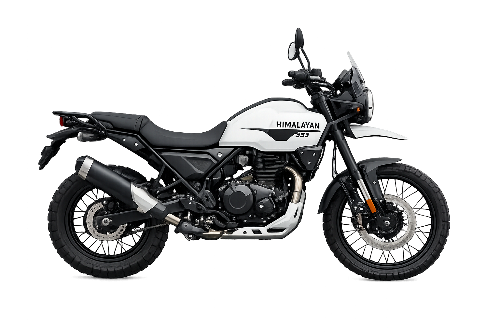
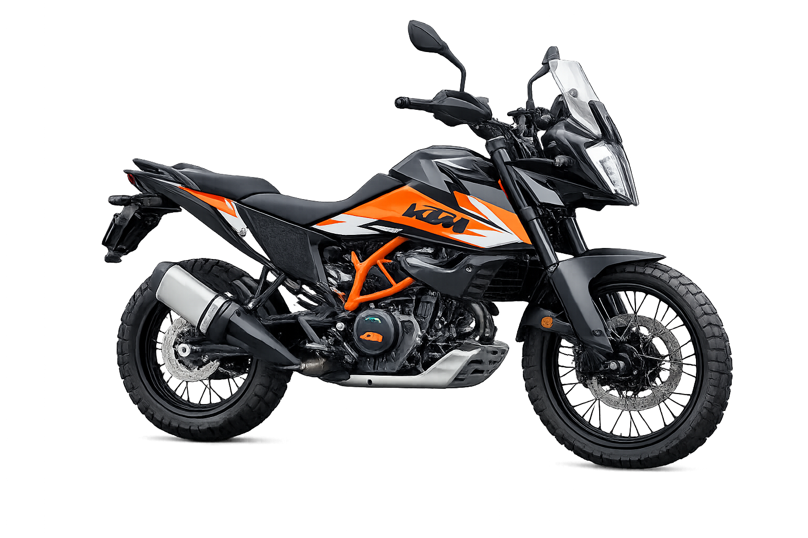
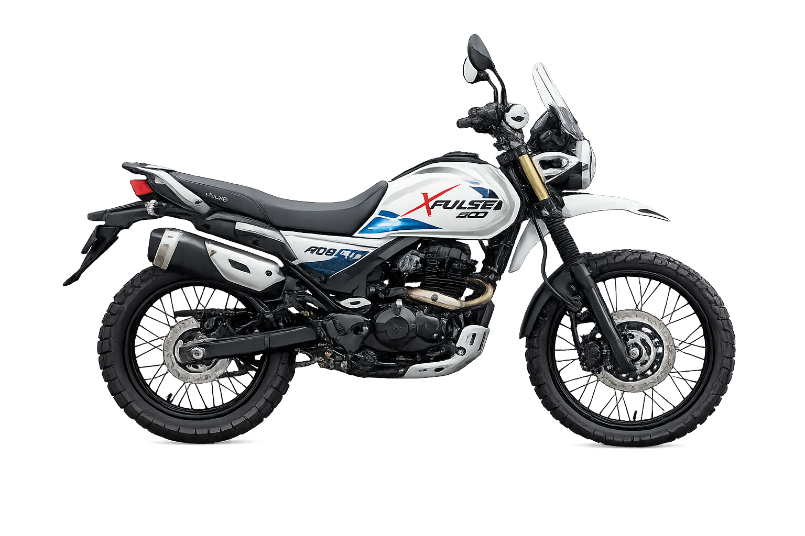

Adventure Bikes
Engineered for riders who want both touring comfort and off-road capability.
Who Should Buy
Tourers and explorers who ride long distances across varied road conditions.
Strengths
Tall stance, long-travel suspension, luggage support, and all-round versatility.
Royal Enfield Himalayan 450

The Royal Enfield Himalayan 450 is a powerful adventure motorcycle designed for long-distance touring and off-road riding. It is powered by a 452cc liquid-cooled single-cylinder engine that produces strong torque and smooth performance for both highways and rough terrain. The bike features a new steel twin-spar frame, long-travel suspension, and large spoke wheels that improve stability and control on difficult roads. It also comes with modern features like a TFT display with navigation, ride-by-wire throttle, and switchable ABS. With its rugged design, comfortable riding posture, and strong engine, the Himalayan 450 is built for riders who love exploring mountains, highways, and off-road trails.
KTM 390
Adventure

The KTM 390 Adventure is a lightweight and powerful adventure motorcycle designed for both highway touring and off-road riding. It is powered by a 373cc liquid-cooled single-cylinder engine that produces strong performance and quick acceleration. The bike features a trellis frame, long-travel WP suspension, and large alloy wheels, which provide stability and control on rough terrain. It also includes modern technology such as a full-color TFT display, ride-by-wire throttle, traction control, and switchable ABS for better safety and riding experience. With its aggressive design, advanced features, and strong performance, the KTM 390 Adventure is a popular choice for riders who enjoy exploring long distances and challenging roads.
XPlus
200 4V

The Hero XPulse 200 4V is a lightweight dual-sport motorcycle designed for both city riding and off-road adventures. It is powered by a 199.6cc oil-cooled 4-valve engine that delivers smooth performance and better power compared to the earlier model. The bike features long-travel suspension, high ground clearance, and spoke wheels, which make it suitable for rough roads and trails. It also includes modern features like a fully digital instrument cluster with Bluetooth connectivity, navigation assist, and LED lighting. With its rugged design, comfortable upright riding posture, and strong off-road capability, the XPulse 200 4V is a great option for riders who enjoy adventure riding and exploring different terrains.